長期トレンド
JKMとJEPXシステムプライスの推移グラフ
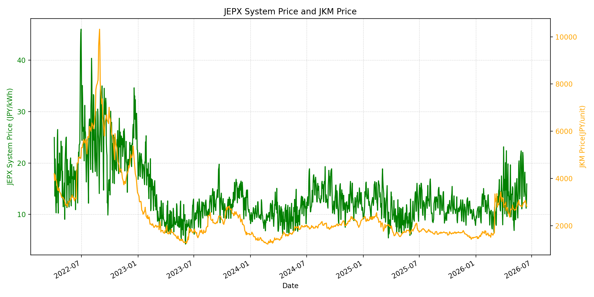
WTIの推移グラフ
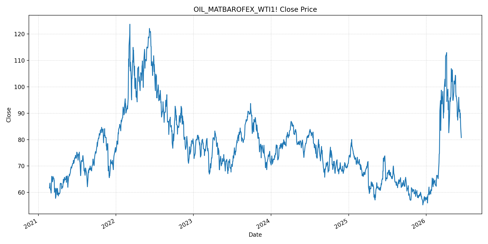
JEPXエリアプライスグラフ（直近一年分）
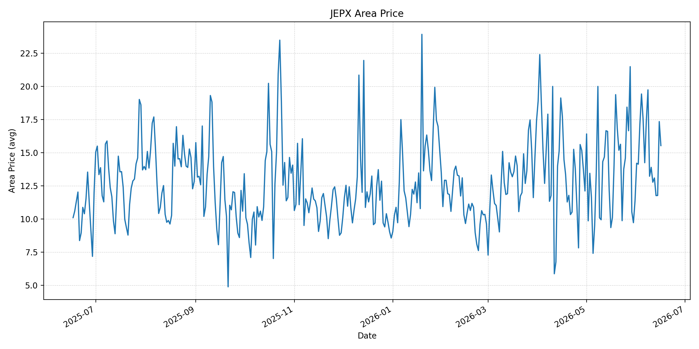
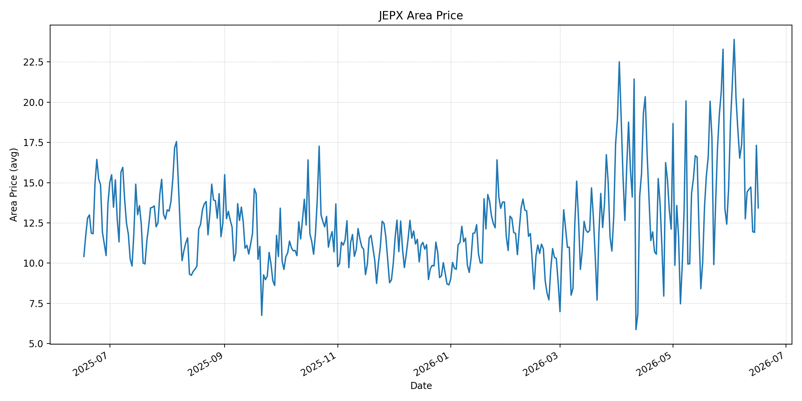
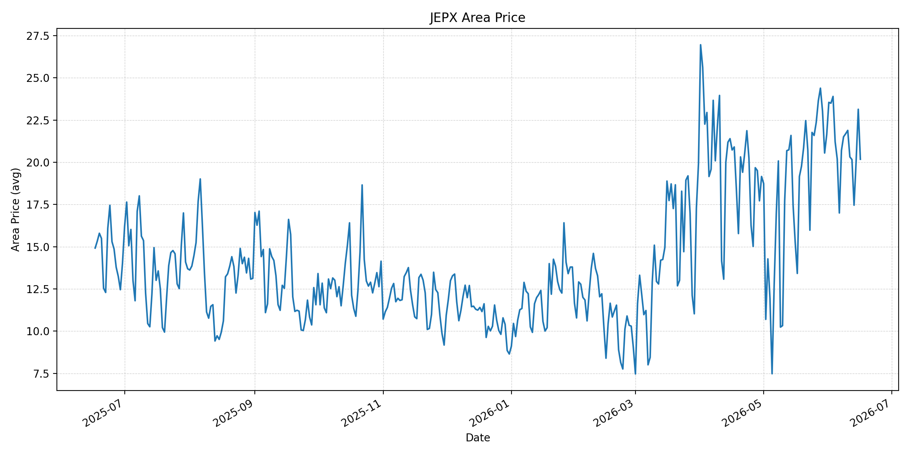
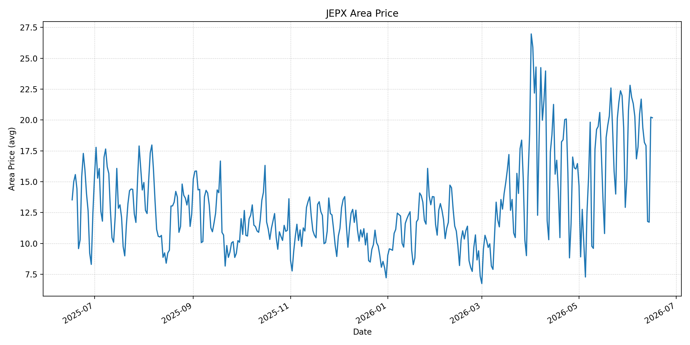
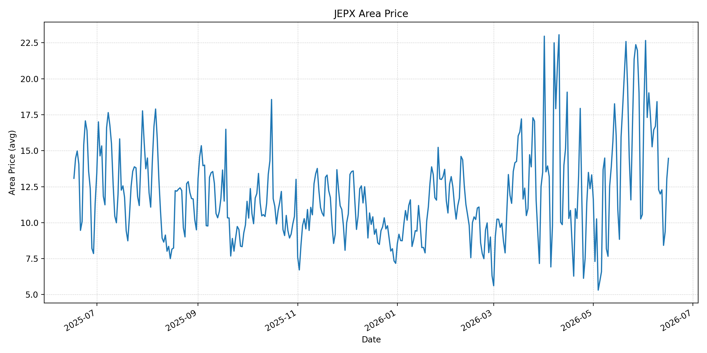
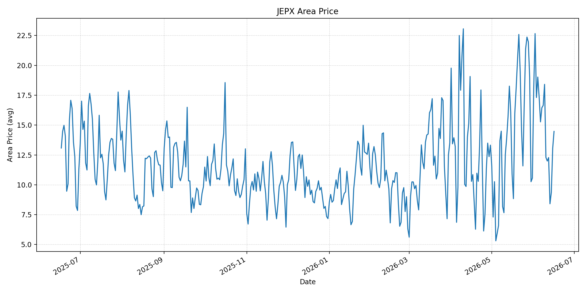
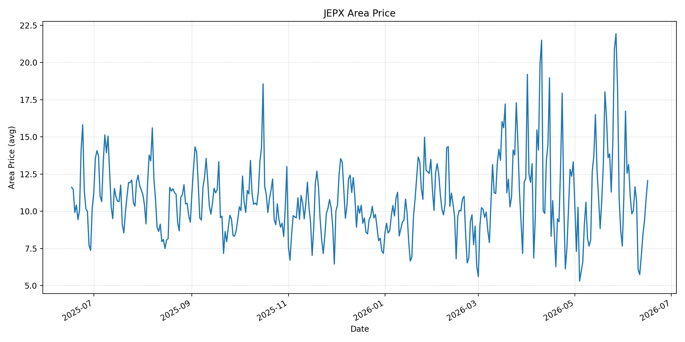
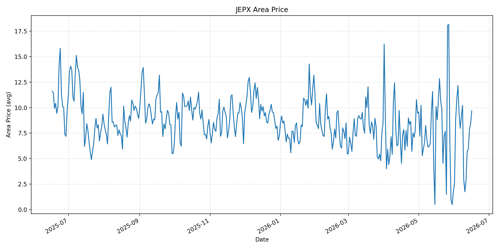
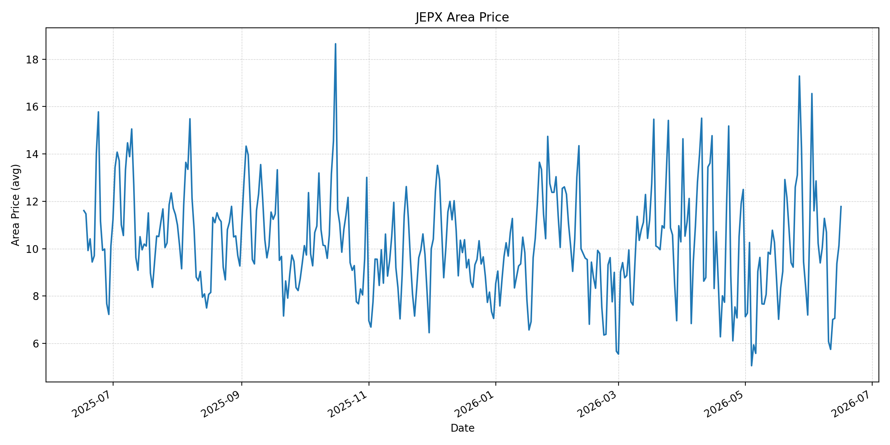
短期トレンド
JKMとJEPXシステムプライスの推移グラフ
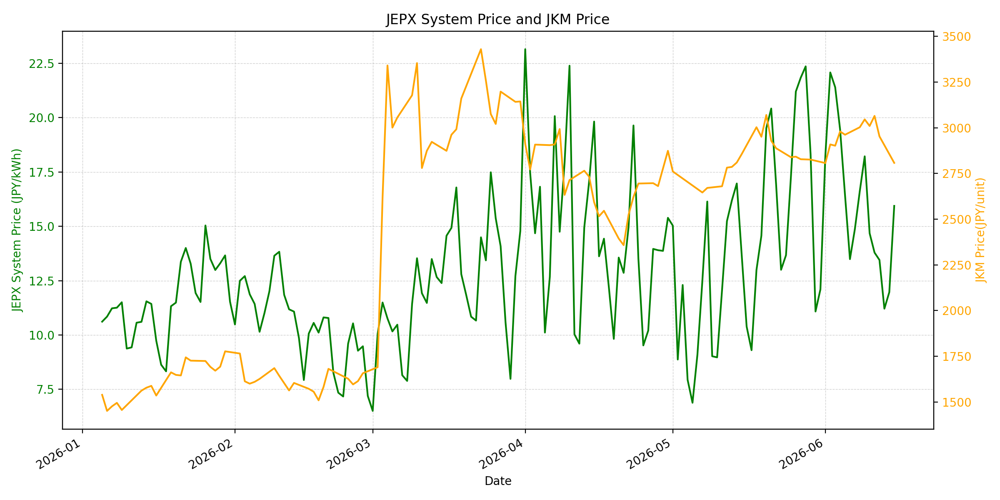
WTIの推移グラフ
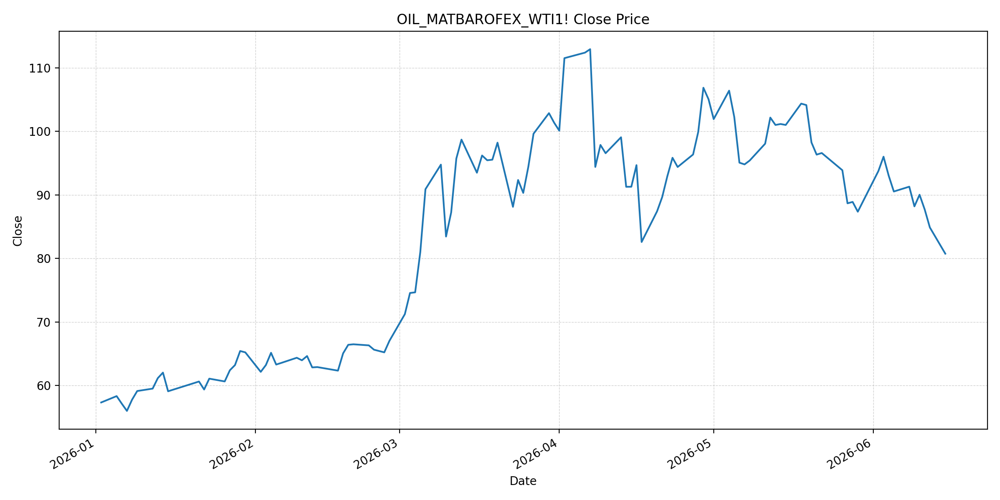
JEPXシステムプライス
JEPXは受渡日ベースの最新非空値で評価しています。最新値は 2026-06-16 分です。先週終値は 2026-06-09 時点の直近値、先月終値は 2026-05-31 時点の直近値で評価しています。
| エリア | 当日価格 | 前日価格 | 前日比（％） | 先週終値 | 先週比（％） | 先月終値 | 先月比（％） | 過去最高値 | 最高値比（％） |
|---|---|---|---|---|---|---|---|---|---|
| システム | 15.23 | 15.94 | -4.45 | 18.22 | -16.41 | 12.10 | 25.87 | 64.06 | -76.23 |
| 北海道 | 15.53 | 17.34 | -10.44 | 13.22 | 17.47 | 11.38 | 36.47 | 73.92 | -78.99 |
| 東北 | 13.43 | 17.32 | -22.46 | 12.75 | 5.33 | 14.64 | -8.27 | 84.92 | -84.18 |
| 東京 | 20.18 | 23.14 | -12.79 | 21.69 | -6.96 | 21.65 | -6.79 | 86.13 | -76.57 |
| 中部 | 20.18 | 20.23 | -0.25 | 21.69 | -6.96 | 15.25 | 32.33 | 52.06 | -61.24 |
| 北陸 | 14.47 | 13.04 | 10.97 | 18.41 | -21.40 | 10.56 | 37.03 | 46.48 | -68.87 |
| 関西 | 14.47 | 13.04 | 10.97 | 18.41 | -21.40 | 10.56 | 37.03 | 46.48 | -68.87 |
| 中国 | 12.06 | 10.78 | 11.87 | 10.69 | 12.82 | 7.66 | 57.44 | 46.48 | -74.06 |
| 四国 | 9.70 | 8.43 | 15.07 | 2.98 | 225.50 | 1.74 | 457.47 | 46.48 | -79.13 |
| 九州 | 11.78 | 10.13 | 16.29 | 10.69 | 10.20 | 7.20 | 63.61 | 40.54 | -70.94 |
LNG先物価格
最新値は 2026-06-15 の LNG(close) です。先週終値は 2026-06-08 時点の直近値、先月終値は 2026-05-29 時点の直近値で評価しています。
| 当日価格 | 前日価格 | 前日比（％） | 先週終値 | 先週比（％） | 先月終値 | 先月比（％） | 過去最高値 | 最高値比（％） |
|---|---|---|---|---|---|---|---|---|
| 2808.00 | 2953.00 | -4.91 | 3003.00 | -6.49 | 2826.00 | -0.64 | 10319.00 | -72.79 |
石油先物価格
最新値は 2026-06-15 の OIL(close) です。先週終値は 2026-06-08 時点の直近値、先月終値は 2026-05-29 時点の直近値で評価しています。
| 当日価格 | 前日価格 | 前日比（％） | 先週終値 | 先週比（％） | 先月終値 | 先月比（％） | 過去最高値 | 最高値比（％） |
|---|---|---|---|---|---|---|---|---|
| 80.75 | 84.88 | -4.87 | 91.30 | -11.56 | 87.36 | -7.57 | 123.70 | -34.72 |
ニュース
イラン情勢に関するニュース
- 2026年6月15日、APは、米国とイランの初期合意が正式署名へ進みつつあると報じました。合意は戦争終結、停戦延長、ホルムズ海峡再開を柱としますが、核計画、制裁緩和、イスラエルのレバノン作戦が未解決のリスクとして残っています。 参照: AP, 2026-06-15
- 2026年6月15日、Guardianは、米イランの覚書によりホルムズ海峡は金曜日までに完全開放されるとの米側説明を伝えました。一方、イラン側報道は「イランの取り決め」の下で30日以内に再開するとしており、実施条件には差が残っています。 参照: The Guardian Live, 2026-06-15
ホルムズ海峡経由の石油・LNGに関するニュース
- 2026年6月15日、APは、ホルムズ再開合意後も石油の流れが完全回復するには数週間から数カ月を要し得ると報じました。約500隻の商船がペルシャ湾内に残り、機雷除去、安全確認、保険、積み出し再開が制約になります。 参照: AP, 2026-06-15
- 2026年6月15日、Guardianは、米イラン合意を受けてBrentが約4%下落し83ドル前後、欧州卸ガスが6%下落したと報じました。ただし、海峡再開の具体的な監督体制、安全通航の条件、署名前の履行範囲は未確定です。 参照: The Guardian, 2026-06-15
ホルムズ海峡経由でない石油・LNGに関するニュース
- 2026年6月15日、APは、サウジアラビアやUAEは代替パイプライン・代替ルートを使えるため比較的早く生産を戻し得る一方、イラクなどは停止規模が大きく回復に時間がかかると整理しました。非ホルムズ供給も即時正常化ではありません。 参照: AP, 2026-06-15
- 2026年6月15日、Guardianは、カタールのLNG設備被害によりガス輸出の回復は原油より遅れ、LNG船が再開初期の優先通航対象になっても、供給量の正常化には時間がかかるとの見方を伝えました。 参照: The Guardian, 2026-06-15
日本国内のイラン戦争に関係するニュース
- 2026年6月15日、Guardianは、日本船主協会の説明として、ホルムズ海峡にはなお日本関連船舶38隻が足止めされていると報じました。合意発表後も、日本向けエネルギー・海運面では実際の通航再開を待つ段階です。 参照: The Guardian, 2026-06-15
- 過去24時間で、JEPX制度や国内電力需給ルールを直接変更する日本政府の強い新規発表は確認できませんでした。直近では経済産業省が2026年5月20日に、今夏は全エリアで最低限必要な予備率3%を確保できるため節電要請は実施しないと発表しています。 参照: 経済産業省, 2026-05-20
インサイト
ニュース事項による日本の電力市場への影響（短期：数日〜1週間）
- JEPXシステムプライスは 15.23 円/kWhで前日比 -4.45% と低下しました。ただし先月比は 25.87% 高く、東京と中部はいずれも 20.18 円/kWhです。米イラン合意で燃料心理は緩んでも、東日本・中部の卸価格はなお高めです。
- OILは 80.75、前日比 -4.87%、先週比 -11.56% まで下落しました。短期的には火力燃料費の上振れ圧力を抑えますが、APが指摘する機雷除去、保険、安全確認が残るため、数日から1週間では通航量の実績確認が主因になります。
- LNGは 2808.00、前日比 -4.91% と下落し、先月比も -0.64% です。燃料価格面ではJEPXの上値を抑える方向ですが、Guardianが報じるLNG供給回復の遅れを踏まえると、スポット調達のリスクプレミアムは急には消えません。
ニュース事項による日本の電力市場への影響（長期：1ヶ月〜半年）
- APとGuardianはいずれも、ホルムズ再開合意後も石油・ガス供給の正常化には数カ月を要し得るとしています。LNGとOILは過去最高値比でそれぞれ -72.79%、-34.72% と低いものの、供給正常化前提の価格低下を半年先まで直線的に織り込むのは早いです。
- 非ホルムズ供給では、サウジアラビアやUAEの代替ルートは回復を助けますが、イラクの生産再開やカタールLNG設備の回復には時間差があります。日本のLNG火力依存を考えると、1ヶ月から半年では燃料調達の分散と船腹・保険コストが卸価格の上振れ要因として残ります。
- 日本関連船舶38隻がなお海峡内に滞留しているとの報道は、合意発表と実物流の間に遅れがあることを示します。経産省は今夏の節電要請を見送っていますが、四国、九州、中国の先月比上昇が大きく、燃料と地域需給の両方を継続監視する局面です。